Output files
Back to the main page
Table of contents
Output files
Once you've launched the LAUNCHME.bat file and the disassembly was completed, let's take a look at ASM files. I'll explain what all that means. Right now I'm looking at my Captain Tsubasa 2 disassembly.
Disassembly syntax
First of all, it makes you feel like you're looking at the code via Debugger in FCEUX. You can get the same syntax highlighting from the next article.
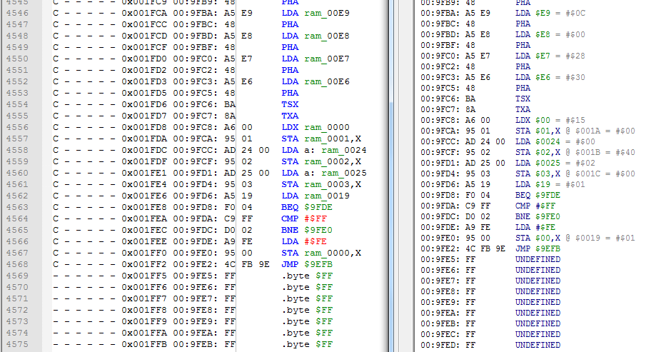
Starting from the left, here goes CDL flags, ROM File address, bank number (calculated the same way as in FCEUX), NES Memory address, opcode + operands, and finally instruction or a single byte.
RAM addresses ($0000-$07FF) are labeled with "ram_". You can also find those inside a RAM_file from config file with some additional info.
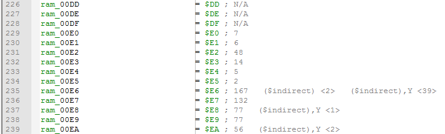
Some RAM addresses have additional "a:" text. It enforces Absolute addressing mode for Zero Page RAM addresses in instructions which can use both Zero Page and Absolute addressing modes. If not enforced, ca65 assembler will compile a 2-byte instruction, not 3-byte as in the original game, which means that the code below will be shifted upwards.
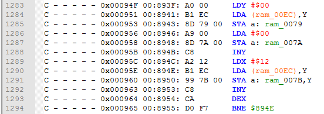
Here are bytes which are using text from a table file. In this case these bytes are actually instructions, but since CDL haven't logged their usage, they were printed as bytes.
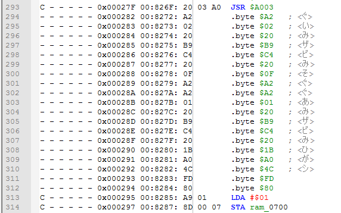
If you're familiar with which byte corresponds to which opcode, you won't have much trouble determine unused code from data. But in any case my Notepad++ script will do most of this job for you.
And finally each file starts with some stuff for ca65 assembler, and prints ROM File range for the current bank. If the same ASM file name was selected for several banks in a config file, there will be several sections like this.
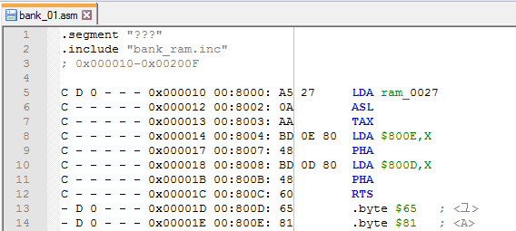
Flags
There are 6 CDL flags which are displayed in assembly file. Each flag corresponds to one of the "-" symbols. If none of the CDL flags were set, the disassembler will print "- - - - - -" line + a byte + text from a table file (if configured).
One thing you can be sure of is that Code/Data Logger hasn't logged any usage of this particular byte. Which can also (probably) mean that this byte/instruction is never actually used in the game. The better your CDL file, the more you can be sure of it.
Code flag (C), bit0
This is the most important flag for the disassembler. If set, byte will be printed as an instruction, otherwise as a byte.
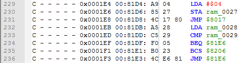
In case some code was copied from somewhere in $8000-$FFFF to SRAM ($6000-$7FFF) and executed from SRAM, these bytes will not be marked with C flag and hence will not be disassembled as instructions.
Data flag (D), bit1
If a byte was read as data by some instruction, LDA $xxxx,Y for example, it will be marked with D.
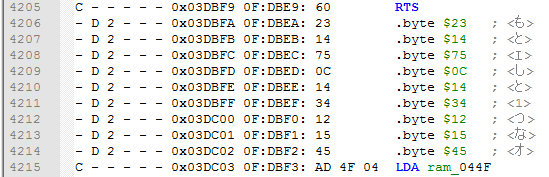
Code/Data Logger also sets D flag in case somewhere was executed an Absolute JMP $xxxx (4C) instruction to this location.
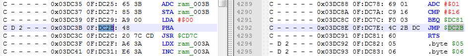
So keep an eye on "C D ?" flags combinations, especially if they still don't have labels after my autolabeling Notepad++ script (which probably means that JMP is located in another ASM file).
In very rare cases both C and D flags can be set while not actually having any JMPs to it.
Data Mapping flag (0-4), bit2-bit3 and bit7
This flag shows where Data was located last time it was used. 0 means somewhere in $8000-$9FFF range, 1 = $A000-$BFFF, 2 = $C000-$DFFF, 3 = $E000-$FFFF. The disassembler ignores this flag if D flag is not set.
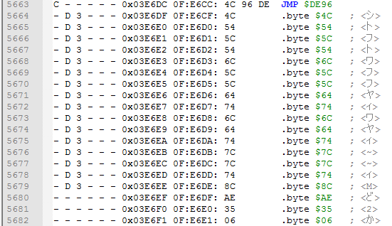
This flag can be used to make sure you have mapped banks properly in a config file. For example if you decided to map code at $8000-$9FFF, but you see "D 1" all over the file, then think again.
There is one more case with 4 = $6000-$7FFF. Some mappers allow to switch PRG banks in $6000-$7FFF area. I haven't tested it yet, but in theory these bytes should be properly mapped with C flag, and having "D 4" for data bytes.
Indirect flag (I), bit5
I flag is set if some instruction with ($indirect,X) or ($indirect),Y was reading this byte, for example LDA ($xx),Y. In the screenshot you can see that I flag helps separate 2 different tables with bytes.
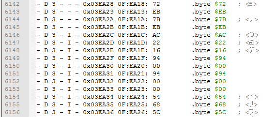
I flag often gets set if this byte was read as a low/high byte of some other address. I flag is always set together with D flag.
Indirect Jump flag (J), bit4
J is set if some Indirect JMP ($xxxx) (6C) instruction was executed to this location. Here are 2 bytes that were used as low/high bytes for this address.
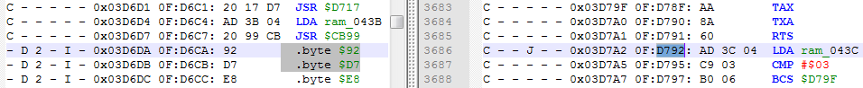
J will be always set together with C flag, because games don't jump into data.
Audio flag (A), bit6
A is set if this byte was used as a DPCM-sample byte for a DMC audio channel. A will be always set together with D flag. These bytes can be located only somewhere in $C000-$FFFF range, and the address of the last sample byte always ends with 0, for example $C3F0.
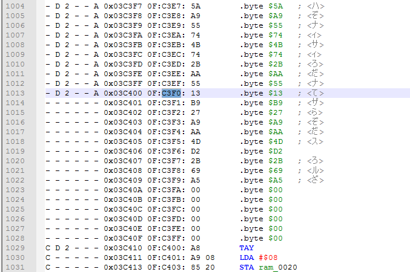
If you have found those, I suggest you create a .bin file with them and use .incbin "DPCM.bin" (or something) instead of having them inside an ASM file.